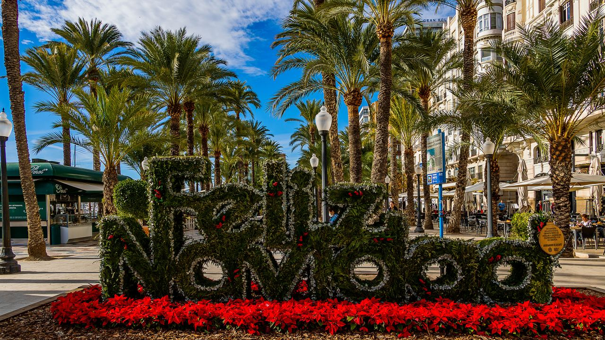
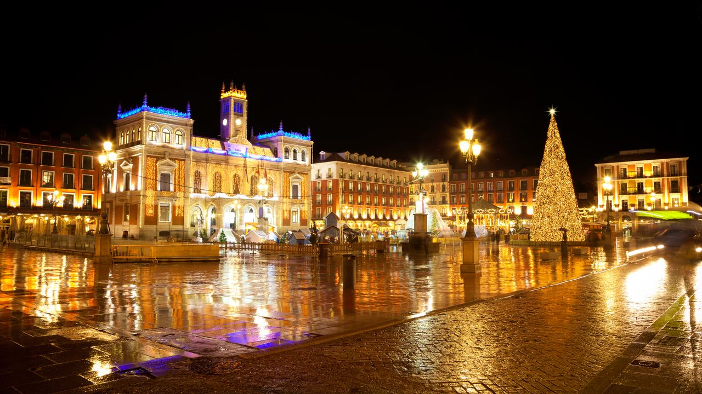
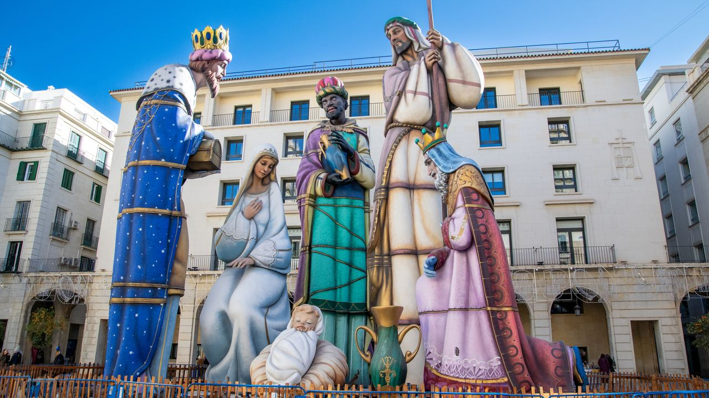
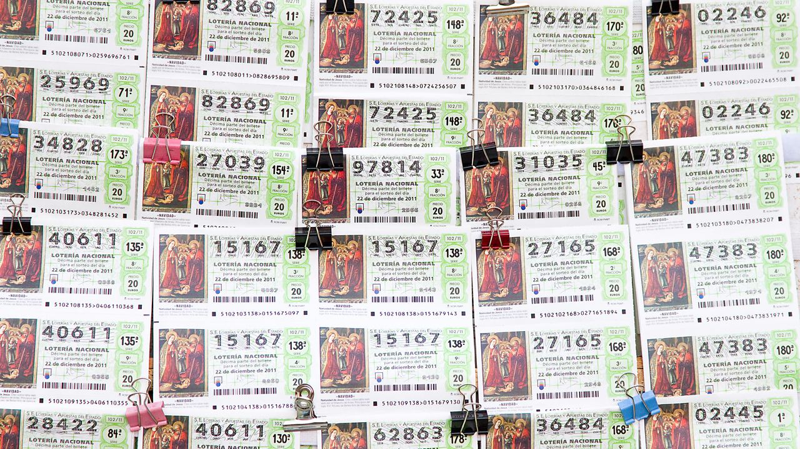
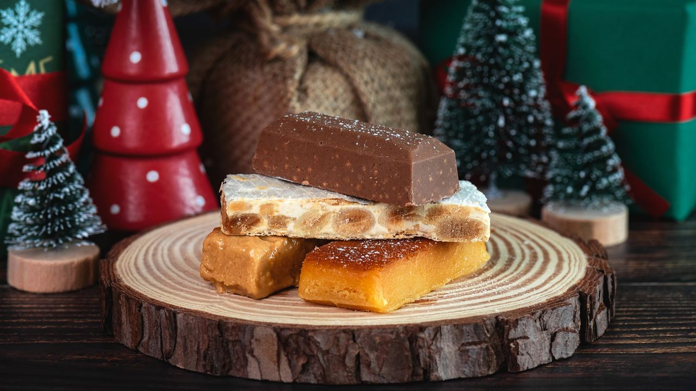
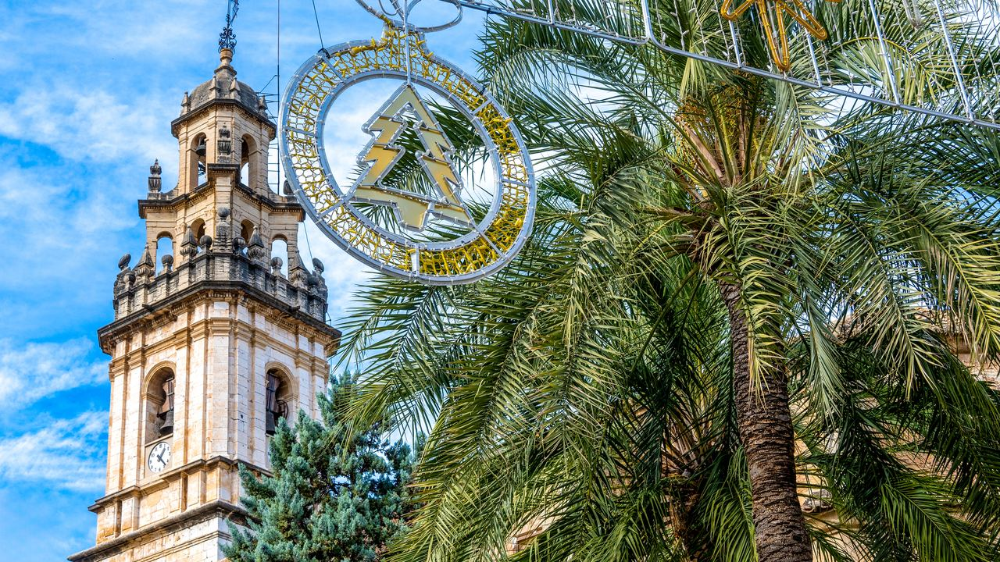

Leben in Spanien · Traditionen
Weihnachten in Spanien: Traditionen und Festzeit
 Von Anita Orłowska · · aktualisiert · 3 Min. Lesezeit
Von Anita Orłowska · · aktualisiert · 3 Min. Lesezeit

Kurz gesagt: Weihnachten ist in Spanien eine lange Zeit: Ende November gehen die Lichter an, die Lotterie El Gordo am 22. Dezember markiert den eigentlichen Beginn, Heiligabend (Nochebuena) ist ein spätes Familienessen, und die Festzeit endet erst am 6. Januar mit den Heiligen Drei Königen. Krippen (Belenes) sind traditioneller als Bäume. Turrón, der Mandelnougat aus Jijona bei Alicante, steht auf jedem Tisch. Der 28. Dezember ist der spanische 1. April. An der Küste ist es oft sonnig genug für einen Strandspaziergang.
Weihnachten an der spanischen Küste heißt sonnige Spaziergänge unter Palmen mit Lichterketten, volle Terrassen und lange Familienessen. Es fühlt sich anders an als in Deutschland, Österreich oder der Schweiz, aber genauso festlich.
Hier der spanische Weihnachtskalender und die Traditionen dahinter.
Eine Zeit, kein Tag

Ende November oder Anfang Dezember gehen die Lichter an, auf den Plätzen entstehen Märkte und Eisbahnen. Die wichtigsten Feiertage sind der 8. Dezember (Mariä Empfängnis), der 25. Dezember, der 1. und der 6. Januar. Der 26. Dezember ist in den meisten Regionen kein Feiertag. Die Schulferien dauern meist vom 22. Dezember bis zum 7. Januar. Berühmt für ihre Lichter sind die Calle Larios in Málaga und Vigo.
Krippen

In spanischen Wohnungen war die Belén (Krippe) lange wichtiger als der Baum. Rathäuser, Kirchen und Vereine bauen große Krippen auf, manche mit Hunderten Figuren, und ihr Besuch ist ein Familienausflug. Im Zentrum von Alicante standen in den letzten Jahren riesige Krippenfiguren. In Katalonien entdeckt man vielleicht den Caganer, eine freche Figur in der Krippe.
El Gordo, 22. Dezember

Die Weihnachtslotterie (Lotería de Navidad) ist eine der ältesten und größten der Welt. Familien, Kollegen und Bars teilen sich monatelang Lose, und am Morgen des 22. Dezember hört das ganze Land zu, wenn Kinder der Schule San Ildefonso in Madrid die Gewinnzahlen singen. Für viele Spanier beginnt damit Weihnachten.
Nochebuena und Weihnachtsessen

Heiligabend (Nochebuena) ist ein spätes Familienessen mit Meeresfrüchten, Fisch, Lamm oder Braten, danach gehen manche zur Mitternachtsmesse (Misa del Gallo). Der 25. ist ein entspanntes Mittagessen. Zum Nachtisch gibt es Turrón, Mandelnougat, hart (Alicante) oder weich (Jijona), beide aus dem Ort Jijona (Xixona) im Hinterland von Alicante, dazu Marzipan und Polvorones. Geschenke kommen traditionell am 6. Januar, inzwischen bringt aber auch Papá Noel am 25. etwas, und im Baskenland und in Katalonien gibt es eigene Figuren wie Olentzero und den Tió de Nadal.
Día de los Inocentes, 28. Dezember
Der 28. Dezember ist der spanische 1. April. Zeitungen und Fernsehen bringen erfundene Meldungen, und Freunde spielen sich kleine Streiche, etwa eine Papierfigur auf dem Rücken.
Weihnachten an der Küste

An Costa Blanca und Costa del Sol sind Dezembertage oft sonnig und um 17–18 °C warm. Viele spazieren nach dem Essen an der Promenade, manche wagen ein Weihnachtsbad. Das ist ein Grund, warum so viele Mitteleuropäer heute den ganzen Winter hier verbringen. Siehe Neujahr in Spanien und Dreikönigstag.
Häufige Fragen
Wann beginnt Weihnachten in Spanien?
Die Lichter gehen Ende November oder Anfang Dezember an, für viele beginnt die Festzeit aber mit der Lotterie El Gordo am 22. Dezember. Sie endet am 6. Januar.
Was isst man in Spanien an Weihnachten?
Meeresfrüchte, Fisch und Lamm oder Braten, danach Turrón, Marzipan und Polvorones.
Wer bringt in Spanien die Weihnachtsgeschenke?
Traditionell die Heiligen Drei Könige am 6. Januar. Papá Noel bringt heute oft auch am 25. Dezember etwas.
Ist der 26. Dezember in Spanien ein Feiertag?
In den meisten Regionen nicht, nur in einigen wie Katalonien und den Balearen.
Ein Winterzuhause in der Sonne
Weihnachten am Mittelmeer ist oft der Beginn der Idee eines Zweitwohnsitzes. Wenn das nach Ihnen klingt, schreiben Sie uns, und wir helfen Ihnen, ein Zuhause an der Küste zu finden.
Quellen: Loterías y Apuestas del Estado – Christmas Lottery · Consejo Regulador IGP Jijona y Turrón de Alicante · Spain's official tourism portal – Christmas